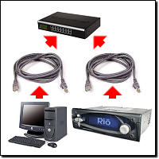
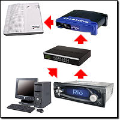

· How do I hook up the player with ethernet?
(Entry last updated on October 24th, 2008)Setting up an ethernet network at home can be tricky. Many have done it, and once you understand how networks work, there are many benefits to having a home LAN. However, you should make sure you've got a working network in place before adding the car player to the mix. I don't recommend using the car player as your first network troubleshooting project.
Once you've got a multi-computer network running, then the car player can be treated the same as you would treat any other computer being added to an existing network.
This text assumes that you're doing the basic step of reading the manuals that came with all of your networking gear, such as the manual that came with your ethernet card or your hub. I'm not going to tell you exactly where to click in Windows to set your IP address, that belongs in the manual for your ethernet card.
Here are a few examples of the most common ways you can connect the car player to a network:
Through a hub or a switch (recommended)
|  |
In this configuration, the PC (or multiple PCs) and the car player are connected to an ethernet hub or switch with standard "straight-through" 10baseT network cables. This, of course, requires that the PC has an ethernet adapter card installed and working.
The difference between a "hub" and a "switch" is rather subtle and technical. For the purposes of hooking up the car player, hubs and switches can be considered to be pretty much the same thing. They look the same on the outside and serve the same function, which is to connect multiple computers on the same LAN. Switches are generally faster, and are therefore sometimes more expensive to buy, but even switches are pretty cheap these days. Although just about any hub or switch should work, there have been a few documented cases of the car player being incompatible with certain switches, so if you're using a fast switch, you might need to daisy-chain a basic 10baseT hub between the car player and the switch to get it working.
The IP addressing scheme of the computer and the car player will depend on how you want the network configured. You can either set fixed IP addresses for all the devices, making sure they all have unique addresses in the same subnet as described here, or you can configure everything to obtain an IP address automatically, which is the default setting. Automatic addressing is usually only used when you've got a DHCP server on the network (a device that assigns addresses, for instance, a cable modem or DSL router may double as a DHCP server), but usually you can configure the devices as "automatic" and they'll still work even without a DHCP server. The latter works because recent versions of the Windows operating system will drop back to a randomly-selected UPNP (universal plug and play) address in the absence of a DHCP server, and so will the car player.
If setting fixed IP addresses yourself, use addresses either in the range of 192.168.0.x, or 10.x.x.x. These are the most common addressing schemes for local LANs, and will guarantee that the addresses never conflict with the public internet when you connect to it.
|
Direct connection with a crossover cable (recommended only if you don't have a hub)
 |
If you don't have a hub, and you don't have any reason to connect your computer to other computers or to a broadband internet link, you can use this method to connect the car player directly to your PC's ethernet card. Since hubs are dirt-cheap and can be found at any computer store, the hub option is better. Hubs allow you to connect multiple computers to the same network and take advantage of all of the features networks have to offer.
The most important thing to remember is that this requires a special "crossover" network cable in order to work. These can be purchased at most computer stores, but are more rare than the regular kind of network cable. If you don't know whether your cable is a straight cable or a crossover cable, you have to look closely at the wire pairs and determine the pinouts as described on this page.
If you use this connection method, all the things previously mentioned about fixed IP addresses still counts. This configuration has no DHCP server, and the two devices must both have addresses in the same subnet.
|
Connected to a DSL or Cable Modem
|  |
If you're connected to the internet through a DSL modem or a Cable modem, check to make sure that the modem has a built-in NAT router/firewall feature to protect your home network from crackers. Most modern DSL and Cable modems have this feature. Such devices combine several functions into one little box: The DSL/Cable modem, a NAT (Network Address Translation) router/firewall, and a DHCP server. Some even include built-in hubs/switches or wireless access points.
Pictured at left is a situation where each of those functions is handled by a different device, but you might have a single device that does all of those functions.
Even if your DSL/Cable router has a built-in hub/switch, you still might need an extra hub if you're working around an incompatibility problem with certain switches as described here.
In this configuration, the router acts as the DHCP server, and the computers and the car player should be configured to get their IP addresses automatically from the DHCP server.
I don't recommend sharing the car player on the internet through your cable/DSL connection. It's (a) dangerous if you don't know what you're doing, and (b) potentially illegal if you're doing it for the purpose of sharing copyrighted music. But if you know what you're doing, you can set up either port forwarding or a DMZ on your router to accomplish this. Consult the documentation that came with your router for details. Just remember that almost anything exposed to the internet which isn't behind a NAT layer or a firewall can be hacked.
|
There are other ways to connect the car player to a network, but these are the simplest and most common methods. More complicated schemes are best left to those who are experts at configuring networks. If you still have trouble when using one of these simple schemes, check the troubleshooting steps described here.
Once you've got ethernet working, you can press the Options button in the first screen in Emplode and select the "Network Broadcast" and/or the "Specific Address" option to connect to the car player. You can also get fancy and try connecting to it with a web browser or an FTP client.
|